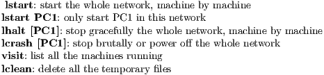

Notebook: CCNA Level 1
July 11, 2017


The focus of this course is on learning the fundamentals of networking.We will do the following:
Our studying is based on the following environment:


Here are the useful commands for manipulating virtual machines. 
Attention: lclean is always appreciated after a lcrash or lclean.
We are now going to do an exercise. Exercise files include ”lab.conf ”(description of network), ”PC1.startup”(initialization of PC1) and ”PC2.startup”.
We can do many things on this network of two virtual machines. To start the network, first enter privileged mode by using sudo -s, then type lstart under the project directory.


The network infrastructure contains three categories of network components:


A topology diagram is used to visualize the organization and operation of a network.
Specialized terminology is used when discussing how each of these devices and media connect to each other.
Note: Often, the terms ”port” and ”interface” are used interchangeably. The port on a router are referred to as ”network interface”.
There are two types of topology diagrams:
Typical network infrastructures include:
LANs provide high speed bandwidth to internal end devices and intermediary devices while WANs typically provide slower speed links between LANs.
The Internet is a worldwide collection of interconnected networks. There are organizations helping to maintain
structure and standardization of Internet protocols and processes, including the Internet Engineering Task Force
(IETF), Internet Corporation for Assigned Names and Numbers (ICANN), the Internet Architecture Board (IAB),
etc.
Note: The term ”internet” describes multiple networks interconnected.
Intranet refers to a private connection of LANs and WANs that belongs to an organization, and is accessible only by the
organization’s members, employees, or others with authorization.
However, organization may use an ”extranet” to provide secure and safe access to individuals who work for a different organization,
but require access to the organization’s data.
There are many different ways to connect users and organizations to the Internet.
Today, separate networks are converging. Converged networks delivers data, voice, and video between different types of devices over the same network infrastructure, using the same set of rules, agreements, and implementation standards.
There are four basic characteristics that the network architecture5 needs to address in order to meet user expectations:
keyword: confidentiality, integrity, availability
Fault tolerant limits the impact of a failure and allows quick recovery when such a failure occurs. The solution is redundancy by implementing a packet-switched network. Redundant connections allow for alternative paths if a device or a link fails. A single message, is broken into multiple message blocks, called packets. Each packet has the necessary addressing information of the source and destination of the message. The routers within the network switch the packets. All the packets in a single message could take very different paths to the destination. This is quite different from circuit-switched network traditionally used for voice communications where a dedicated circuit is established between the source and destination before the users may communicate.
A scalable network can expand quickly to support new users and applications without impacting the performance of the service being delivered to existing users, because the designers follow accepted standards and protocols.


QoS is a primary mechanism for managing congestion and ensuring reliable delivery of content to all users. Congestion occurs when the demand for bandwidth exceeds the amount available. Network bandwidth is measured in bits per second(bps), the number of bits that can be transmitted in a single second. Priority queue policy is implemented by routers if the network experiences congestion.
As for network security, there are three primary requirements. Firstly, confidentiality, only the intended and authorized recipients can access and read data. Secondly, integrity, the information has not been altered in transmission. Thirdly, availability, timely and reliable access to data services for authorized users.
fdasf